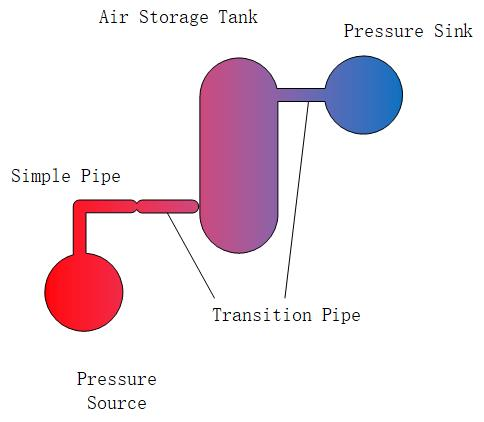

空气管道系统


# Define components
using Ai4EComponentLib
using Ai4EComponentLib.AirPipeSim
using ModelingToolkit, DifferentialEquations
@named inlet = PressureSource(p=6e5, T=300)
@named pipe1 = AirSimplePipe(R=100, T=300)
@named pipe2 = TransitionPipe(n=20, f=0.016, D=0.2, L=100, T=300, pins=5.6e5, pouts=4e5)
@named airTank = AirStorageTank(V=20, T=300, p0=4e5)
@named pipe3 = TransitionPipe(n=20, f=0.016, D=0.2, L=100, T=300, pins=4e5, pouts=2e5)
@named outlet = FlowSource(qm=-3.0, T=300)
# Connect components
eqs=[
connect(inlet.port,pipe1.inlet)
connect(pipe1.outlet,pipe2.inlet)
connect(pipe2.outlet,airTank.inlet)
connect(airTank.outlet,pipe3.inlet)
connect(pipe3.outlet,outlet.port)
]
@named connects=ODESystem(eqs,t)
@named model=compose(connects,inlet,pipe1,pipe2,pipe3,airTank,outlet)
# Simplify the system and solve
sys=structural_simplify(model)
prob=ODAEProblem(sys,[],(0.0,5.0))
sol=solve(prob,Rosenbrock23())